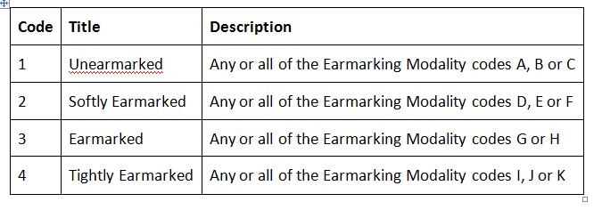

As part of the 2.03 IATI standard upgrade consultation there was consensus for the need to allow different aid modalities. As a result, an AidType vocabulary attribute was added to version 2.03 of the IATI Standard.
With version 2.03 going live on 19th of February, we are now putting forward a proposal for two new codes to the AidType Vocabulary codelist. While we are aware that a proposal has been shared at WP- STAT by @OJ_ to make changes to the current OECD DAC codelist to align and meet the Grand Bargain commitment, the earliest that any changes can be approved is June 2018. As such, we felt the need to put forward the below proposal for two new codes to the AidTypeVocabulary codelist.
Code: 2
Name: Earmarking Category
URL: Derived from Annex I of Grand Bargain definitions

Code: 3
Name: Earmarking Modality
URL: Codes A to L replicated directly from Annex I of Grand Bargain definitions
{kind=link}
Proposed guidelines:
-
All activities and/or transactions should contain a code from the AidType vocabulary specified. It is strongly recommended that AidTypeVocabulary 1- OECD DAC is used. Additional vocabularies should be used only where appropriate.
-
If AidType Vocabulary is omitted, then IATI assumes an AidTypeVocabulary of 1 - OECD DAC.
This is a proposal for additions to the AidType Vocabulary codelist which is a non-embedded codelist. Please add any comments in here by next Wednesday 14th of March. Following response from the community the new AidType Vocabulary codes will be added within a week.